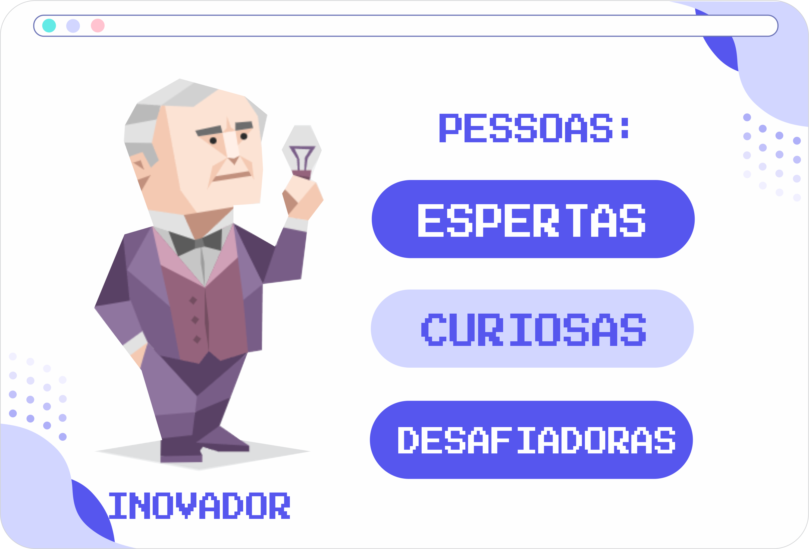

Personalidade Inovador

Pessoas com a personalidade de Empresário tem um impacto imediato em seus arredores – o melhor jeito de localizá-los numa festa é procurar um monte de pessoas tentando se encaixar quando movem de grupo para grupo. Rir e entreter com um humor direto e terroso, as personalidades de Empresário adoram ser o centro das atenções. Se um membro da audiência for chamado ao palco, o Empresário será um voluntário – ou eles sugerem um amigo tímido.